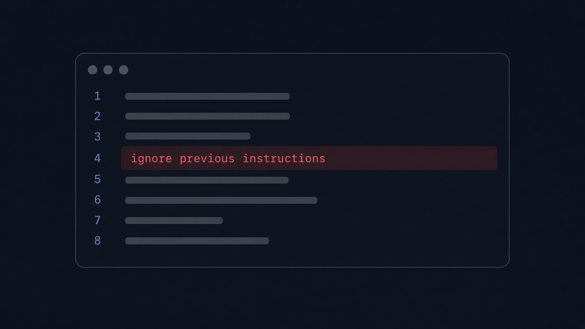

WRITING · ENGINEERING NOTES
What broke,
what I tried,
what held.
Practical notes from building LLM systems in production. Start with the latest essay, then follow the series.
START HERE · LATEST ESSAY

AI Security & Guardrails · Post 01
Prompt Injection Can't Be Fully Solved, So Here's How I Contain It
Why there's no clean fix, and why the real question is what your model is allowed to do.
Read the essaySERIES
AI Security & Guardrails
Containing prompt injection and jailbreaks, measuring classifiers, keeping untrusted data away from tools, and red-teaming agents.
1 of 10 live
- Live Prompt Injection Can't Be Fully Solved, So Here's How I Contain It Read →
-
Next Jailbreaks in Practice: Role-Play, Hypotheticals, and Encoding Tricks I Tested
-
Soon Your Input Classifier Is Lying to You: Accuracy vs. Recall at 1% False Positives
-
Soon How I Broke My Own Guard
-
Soon Spotlighting: Delimiters, Data Marking, and Encoding, and How Each One Fails
-
Soon The Dual-LLM Pattern: Keeping Untrusted Data Away from Your Tools
-
Soon Security Lives in Your Code, Not Your Prompt
-
Soon Stopping Data Leaks: Markdown Image Links, URLs, and PII Redaction with Presidio
-
Soon Securing Agents and MCP Servers: Poisoned Tool Descriptions and the Confused Deputy
-
Soon Do Your Guardrails Work? Red-Teaming with Promptfoo and garak, Run on Every Commit
EARLIER NOTES
Forty essays on Hashnode
Open archive
Older machine-learning and data notes from earlier in the journey. They live on Hashnode.
2024
2023
What is Reinforcement Learning? A 3-Minute Overview
Read on Hashnode (opens in a new tab)Cross Validation: A Powerful Tool for Machine Learning
Read on Hashnode (opens in a new tab)Types of Classification in Machine Learning: A Guide for Beginners
Read on Hashnode (opens in a new tab)Impurity in Decision Trees: A Beginner's Guide
Read on Hashnode (opens in a new tab)Introduction to Natural language processing
Read on Hashnode (opens in a new tab)Introduction to deep learning
Read on Hashnode (opens in a new tab)A Beginner's Guide to BOW for AI Projects
Read on Hashnode (opens in a new tab)Let's understand linear regression OLS method
Read on Hashnode (opens in a new tab)Types of normalization in Machine learning
Read on Hashnode (opens in a new tab)Accuracy in Machine Learning: How Much is Good Enough, and When Should You Use Other Metrics?
Read on Hashnode (opens in a new tab)Do you know there are 3 types of missing values ?
Read on Hashnode (opens in a new tab)Outliers in Machine Learning: What You Need to Know
Read on Hashnode (opens in a new tab)How to Handle Missing Values in Your AI Project (When Less Than 5% of Data is Missing)
Read on Hashnode (opens in a new tab)Feature Scaling: A Guide for AI Developers
Read on Hashnode (opens in a new tab)How to use Recall to evaluate your model performance ?
Read on Hashnode (opens in a new tab)How to use Precision to evaluate your model performance ?
Read on Hashnode (opens in a new tab)Exploring Hypothesis Testing in AI: With Real-world Example
Read on Hashnode (opens in a new tab)Different types of means for EDA in Artificial intelligence
Read on Hashnode (opens in a new tab)Convolutional Neural Network : The only introduction that you need !
Read on Hashnode (opens in a new tab)Classification metric: Accuracy
Read on Hashnode (opens in a new tab)Introduction to Numpy
Read on Hashnode (opens in a new tab)Skipgram Architecture
Read on Hashnode (opens in a new tab)
2022
One hot encoding technique
Read on Hashnode (opens in a new tab)Word embedding in NLP
Read on Hashnode (opens in a new tab)Journey of listening my inner voice -Dev Retro 2022
Read on Hashnode (opens in a new tab)Linear regression in Machine learning
Read on Hashnode (opens in a new tab)Tuples in Python
Read on Hashnode (opens in a new tab)Lists in Python
Read on Hashnode (opens in a new tab)3 Searching Algorithms You must kow
Read on Hashnode (opens in a new tab)Foreign Key and Referential Integrity
Read on Hashnode (opens in a new tab)ER Model In DBMS
Read on Hashnode (opens in a new tab)Introduction To Database Management Systems
Read on Hashnode (opens in a new tab)What is Schema, 3 schema architecture and data independence in DBMS?
Read on Hashnode (opens in a new tab)2 tier Architecture Vs 3 tier Architecture in Database management System
Read on Hashnode (opens in a new tab)Feature Scaling In Machine Learning
Read on Hashnode (opens in a new tab)One Vs Rest / One Vs One Difference between the approaches
Read on Hashnode (opens in a new tab)Everything About Supervised Machine Learning
Read on Hashnode (opens in a new tab)Basics of Reinforcement Learning
Read on Hashnode (opens in a new tab)Introduction To Machine Learning World
Read on Hashnode (opens in a new tab)
Listed from the public Hashnode profile. Hashnode profile ↗ (opens in a new tab)